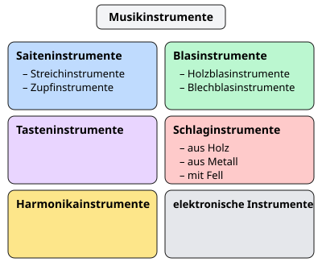
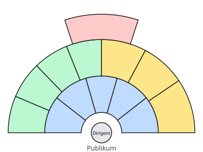
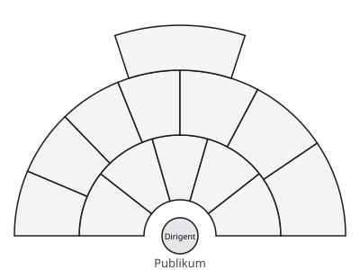

Medienübersicht
Alle Bilder, Audios und Videos dieser App mit ihrer Quelle und ihrer Lizenz.
Bilder

images/familien.svgQuelle: eigene Zeichnung. Lizenz: CC-BY-4.0.Verwendet auf: Saiten- und Blasinstrumente, Tasten-, Schlag-, Harmonika- und elektronische Instrumente

images/sitzplan.svgQuelle: eigene Zeichnung. Lizenz: CC-BY-4.0.Verwendet auf: Die Sitzordnung im Orchester

images/sitzplan-leer.svgQuelle: eigene Zeichnung. Lizenz: CC-BY-4.0.Verwendet auf: Die Sitzordnung im Orchester